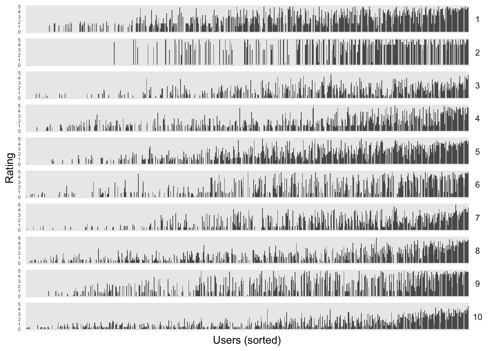

library("dslabs")
library("ggplot2")
library("knitr")
library("tidymodels")
library("tidyr")
library("dplyr")
theme_set(theme_minimal())K-means
An introduction to clustering and how to manage its output.
The goal of clustering is to discover distinct groups within a dataset. In an ideal clustering, samples are very different between groups, but relatively similar within groups. At the end of a clustering routine, \(K\) clusters have been identified, and each sample is assigned to one of these \(K\) clusters. \(K\) must be chosen by the user.
Clustering gives a compressed representation of the dataset. Therefore, clustering is useful for getting a quick overview of the high-level structure in a dataset.
For example, clustering can be used in the following applications,
- User segmentation: A marketing study might try to summarize different user behaviors by clustering into a few key “segments.” Each segment might motivate a different type of marketing campaign.
- Gene expression profiling: A genomics study might try to identify genes whose expression levels are similar across different experimental conditions. These gene clusters might be responsible for a shared biological function.
\(K\)-means is a particular algorithm for finding clusters. First, it randomly initializes \(K\) cluster centroids. Then, it alternates the following two steps until convergence,
- Assign points to their nearest cluster centroid.
- Update the \(K\) centroids to be the averages of points within their cluster.
Here is an animation from the tidymodels page on \(K\)-means,

Note that, since we have to take an average for each coordinate, we require that our data be quantitative, not categorical1.
We illustrate this idea using the
movielensdataset from the reading. This dataset has ratings (0.5 to 5) given by 671 users across 9066 movies. We can think of this as a matrix of movies vs. users, with ratings within the entries. For simplicity, we filter down to only the 50 most frequently rated movies. We will assume that if a user never rated a movie, they would have given that movie a zero2. We’ve skipped a few steps used in the reading (subtracting movie / user averages and filtering to only active users), but the overall results are comparable.
data("movielens")
frequently_rated <- movielens %>%
group_by(movieId) %>%
summarize(n=n()) %>%
top_n(50, n) %>%
pull(movieId)
movie_mat <- movielens %>%
filter(movieId %in% frequently_rated) %>%
select(title, userId, rating) %>%
pivot_wider(title, names_from = userId, values_from = rating, values_fill = 0)
movie_mat[1:10, 1:20]# A tibble: 10 × 20
title `2` `3` `4` `5` `6` `7` `8` `9` `10` `11` `12` `13`
<chr> <dbl> <dbl> <dbl> <dbl> <dbl> <dbl> <dbl> <dbl> <dbl> <dbl> <dbl> <dbl>
1 Seve… 4 0 0 0 0 0 5 3 0 0 0 2.5
2 Usua… 4 0 0 0 0 0 5 0 5 5 0 0
3 Brav… 4 4 0 0 0 5 4 0 0 0 0 4
4 Apol… 5 0 0 4 0 0 0 0 0 0 0 0
5 Pulp… 4 4.5 5 0 0 0 4 0 0 5 0 3.5
6 Forr… 3 5 5 4 0 3 4 0 0 0 0 5
7 Lion… 3 0 5 4 0 3 0 0 0 0 0 0
8 Mask… 3 0 4 4 0 3 0 0 0 0 0 0
9 Speed 3 2.5 0 4 0 3 0 0 0 0 0 0
10 Fugi… 3 0 0 0 0 0 4.5 0 0 0 0 0
# ℹ 7 more variables: `14` <dbl>, `15` <dbl>, `16` <dbl>, `17` <dbl>,
# `18` <dbl>, `19` <dbl>, `20` <dbl>- Next, we run
kmeanson this dataset. I’ve used the dplyr pipe notation to runkmeanson the data above with “title” removed.augmentis a function from the tidymodels package that adds the cluster labels identified bykmeansto the rows in the original dataset.
kclust <- movie_mat %>%
select(-title) %>%
kmeans(centers = 10)
movie_mat <- augment(kclust, movie_mat) # creates column ".cluster" with cluster label
kclust <- tidy(kclust)
movie_mat %>%
select(title, .cluster) %>%
arrange(.cluster)# A tibble: 50 × 2
title .cluster
<chr> <fct>
1 Pulp Fiction 1
2 Silence of the Lambs, The 1
3 Shawshank Redemption, The 1
4 Schindler's List 2
5 Lion King, The 3
6 Mask, The 3
7 Aladdin 3
8 Beauty and the Beast 3
9 Dumb & Dumber (Dumb and Dumber) 3
10 Ace Ventura: Pet Detective 3
# ℹ 40 more rows- There are two pieces of derived data generated by this routine,
- The cluster assignments
- The cluster centroids and both can be the subjects of visualization.
- In our movie example, the cluster centroids are imaginary pseudo-movies that are representative of their cluster. They are represented by the scores they would have received by each of the users in the dataset. This is visualized below. In a more realistic application, we would also want to display some information about each user; e.g., maybe some movies are more popular among certain age groups or in certain regions.
kclust_long <- kclust %>%
pivot_longer(`2`:`671`, names_to = "userId", values_to = "rating")
ggplot(kclust_long) +
geom_bar(
aes(x = reorder(userId, rating), y = rating),
stat = "identity"
) +
facet_grid(cluster ~ .) +
labs(x = "Users (sorted)", y = "Rating") +
theme(
axis.text.x = element_blank(),
axis.text.y = element_text(size = 5),
strip.text.y = element_text(angle = 0)
)
It’s often of interest to relate the cluster assignments to complementary data, to see whether the clustering reflects any previously known differences between the observations, which weren’t directly used in the clustering algorithm.
Be cautious: Outliers, nonspherical shapes, and variations in density can throw off \(K\)-means.

- The goals of clustering are highly problem dependent, and different goals might call for alternative algorithms. For example, consider the ways clustering might be used to understand disease transmission. One problem might be to cluster the DNA sequences of the pathogenic agent, to recover its evolutionary history. This could be done using hierarchical clustering (next lecture). A second problem might be to determine whether patient outcomes might be driven by one of a few environmental factors, in which case a \(K\)-means clustering across the typical environmental factors would be reasonable. A third use would be to perform contact tracing, based on a network clustering algorithm. The point is that no clustering algorithm is uniformly better than any other in all situations, and the choice of which one to use should be guided by the problem requirements.